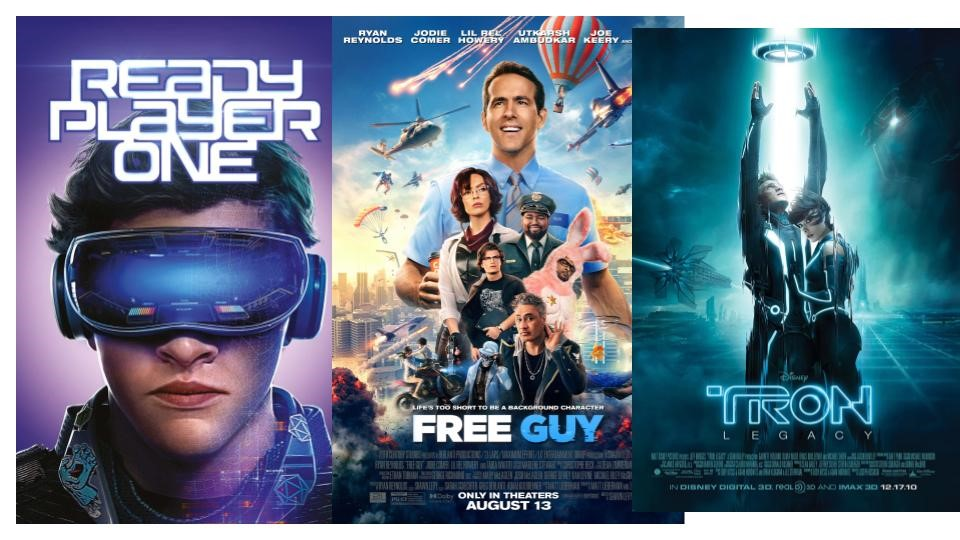

And that’s all there is to it. VirtualReel makes the process of creating attention getting VR videos fast and incredibly simple for anyone!
Last year in 2021, the virtual reality industry was worth $5 billion. In just a couple of years,
that’s expected to more than double!
and then, theres this:
Facebook has ⅓ of the planet’s population on its platform…
and it plans to take all of them into the Metaverse. But that’s not all…
And that’s just a small snippet of the growing demand that’s happening RIGHT NOW.
Which is why now more than ever, you need to position yourself to benefit from this trend.
Create Videos From Scratch Using Existing Content You Don’t Own
Create VR Videos Using Panoramic Images From Your Phone
Create VR Videos With Copy and Pasted Text
Use Existing Videos You Have and Turn Them Into VR Videos
Create VR Videos From Existing YouTube Videos
Convert Any VR Video Into A Spinning Video
Intuitive Beginner Friendly Dashboard
When you first log in, you’ll see just how simple it is to get started using VirtualReel. You can click your way to new VR videos in just minutes. But don’t let the simplicity fool you. VirtualReel still packs a ton of power to turn you into a Metaverse VR video producing machine!
Create VR Videos From Panoramic Images
Whether you take a panoramic photo on your phone or find them online, you can use VirtualReel to create a VR video quickly from the image. Just upload to the platform, make a few tweaks, and you’ve got a dynamic VR video in just seconds!
Create VR Videos From Text/Blog-Posts/Articles
Repurpose existing content online and turn it into eye-catching VR videos. This can be content from your own sites or even content you don’t own such as blogs, articles, etc.
Just load it into VirtualReel and you can turn text into a VR video ready for the Metaverse in no time.
Create VR Video From Your Own Videos
Import & convert any video you own or even those you don’t use anymore into sales and traffic getting VR machines without any of the hassle of special expensive VR eqiepment
Turn Normal Videos Into Virtual Reality Videos
Want to create a VR experience from a game? A concert? A lecture? No problem. You can do it inside of VirtualReel. There are so many ways to use this option that it will make your head spin!
The sky is truly the limit.
Turn VR Videos Into Spinning Videos
If you want to make your VR video stand out a little more, this option allows for that. Simply add your VR video inside VirtualReel and you’ll get a spinning video that your audience will love!
Add 3D Animated Characters From Our Character Library!
As if VirtualReel couldn’t get any more amazing, we’re upping the bar by giving you access to 3D characters from 20 different niches within our own special library.
Simply place these characters in ANY video you create with only a click of your mouse. Perfect for giving your VR videos that extra special touch.
Full Customization For All Your VR Videos
Not only will you be able to create tons of VR videos quickly inside the platform, but you can also tweak and customize them to your specific liking. Add text, other images, clips, music, and more WITHOUT any additional fees.
Choose From 500+ 3D Custom Made VR Video Backgrounds
Make every VR video you create with VirtualReel pop with these uniquely designed backgrounds. Choose from over 500 different designs to get attention and wow your prospects.
Choose From 1000s Of VR Video Footage All With Creative Common License
Enhance your Metaverse video journey even further with our uniquely curated video library. We’ve sifted through thousands of videos and fully vetted them so your business can benefit from your VR video creations without having to worry about copyright restrictions.
VirtualReel iPhone & Android App
Our personal mobile app gives you even more flexibility when it comes to creating VR videos for the Metaverse. With this option, you can take the full power of VirtualReel with you on the go…and never miss an opportunity to create amazing VR videos!
Record Your Audio Directly Inside The App
Want to give your videos a personal touch? No problem. Just click a button in VirtualReel and you can record your audio on the spot. No need for external or expensive audio editors. VirtualReel has you covered from A to Z
Upload VR Videos Directly To Your Youtube Channel Easily
Fill up your YouTube channel fast with amazing VR content directly from the VirtualReel platform. Once you’ve got your video exactly where you want it to be, just connect to your YouTube account and hit send. No cumbersome steps required.
Create VR Videos Up To 30min Long
10 minutes of video would be generous. 20 minutes per video would be amazing. But 30 minutes per video? It’s an absolute steal! That’s what VirtualReel gives you.
When you multiply that with the 500 videos, you’ll be able to produce, that’s 15,000 minutes or 250 hours’ worth of video!
With this much video availability at your fingertips, you’re sure to not only leave your mark on the metaverse but dominate any niche in the metaverse you want.
10 Different Voice Accents In Text-To-Speech
Don’t want to talk in your videos? No problem. Just choose from one of our authentic human sounding voices, import your text, and you can crank out tons of VR videos on the fly in no time
Choose From Millions Of Images To Use In Your Slides
VirtualReel also integrates with some of the best stock image sites online. Find the right images quickly while saving time in the process. This is perfect for boosting the presence of your VR videos
Choose From 1000s Of Background Music To Pick From
Bring your videos to life with backing tracks from our personal library. Simply search for the music you want, give it a listen, then click to add it to your VR video project with a single click
Syndicate Your VR Video Creations Across A Number of Platforms
Send your videos to YouTube, Facebook, Instagram, Tiktok, & Snapchat. No need to have multiple tabs open. This saves you time and a bunch of tedious effort while increasing your presence in various online.
100% Cloud Based - No Messy Downloads or Installs Necessary
One of the great things about VirtualReel is that you can use it anywhere and at any time. Just connect to the internet, open your browser on your device, and start creating awesome VR videos quickly.
Directly Upload To Youtube From Inside App
Not only can you send videos from inside the platform to YouTube, but you can also do it through our app as well! This gives you multiple ways to produce content whenever you wish. Just open the app, choose the video you want, send it to YouTube and you’re golden!
Connect Up To 100 Youtube Channels For Market Domination
With this option you can manage multiple channels to benefit from multiple niches. Perfect for dominating tons of markets without having to spend all day uploading and logging in and out of multiple YouTube accounts.
Add Your Own Logo And Watermark
Prevents others from benefiting from your content and using it as their own. Plus, this gives you a great way to increase your branding whether you have one company or many. Add logos and watermarks for each one.
Access To Image Library With 50,000+ Images
Normally stock footage like this can cost you $50 for just one image. We give you access to over 50,000 high quality images to use in all your VirtualReel projects.
All images are royalty free, so you never have to worry about copyright infringement issues.
Access To Video Library With 10,000+ Video-Clips
These 10,000+ video clips are perfect for accenting your VR video creations. With this many video clips to choose from, you’re guaranteed to find just the right clip that will put your VR videos over the top!
Access To 100+ Fonts
Over 100 fonts to make every video you create look unique. Mix and match or find the perfect font to help convey your message to your audience. No matter which option you choose, VirtualReel can deliver without missing a beat!
100% Approved & Evergreen Software
VirtualReel is totally above board. You’ll never have to worry about the platform jeopardizing your accounts or your business. We only create the best software that’s built to last for our customers and VirtualReel is no different.
Dedicated Support and Regular Updates
You’ll never have to worry about the switcheroo with VirtualReel. We regularly update the app and keep it running lightning fast on our secure servers. Plus, if you ever get stuck - just send us a support request. We’ll be with you every step of the way.
Detailed Training Included - Video + PDF
Although we’ve done our best to make VirtualReel incredibly simple to use, you might find yourself with a few questions. Not to worry. We’ve created an entire training hub complete with documents and videos to help you get out the gate asap.
To make sure you can get the absolute most out of your purchase of VirtualReel today, we also want to gift you a premium commercial license (value $997) at no additional charge.
This way you can go beyond using the software for your own personal needs and charge businesses thousands of dollars to help them create VR videos as well.
Just a handful of clients monthly gives you a six figure business. Even more reason to get access today!
VirtualReel is already worth 100X what we’re charging today. But, just to make getting access a no-brainer, you’ll also receive the following bonuses when you sign up today:
It’s one thing to have access to amazing tools, it’s another to know how to use them. That’s what this webinar is designed to do. Once you get done with this training, you’ll know EXACTLY how to use VirtualReel to pull in thousands of dollars without any guesswork whatsoever.
This should be sold as an upsell, but it’s yours free when you sign up today.
Companies have been preparing society for this for the last few years. There’s a saying that ‘life imitates art’ :
The writing is on the wall. The VR industry is set to almost triple in the next few years. People are going online more
and they’ll only look to consume more content in the Metaverse.The writing is on the wall. The VR industry is set to
almost triple in the next few years. People are going online more and they’ll only look to consume more content in the Metaverse.
Your investment today is totally risk free. Even if you’re not sure if this will work for you, I want you to try VirtualReel today and put it to the test over the next 14 days. That’s right. Don’t hold back. Put it through its full paces.
If for any reason you don’t think VirtualReel lives up to its name, just send me an email and I’ll issue you a prompt and courteous refund. No questions asked.
Plus, if you change your mind over the next 30 days, I’ll still let you keep the bonuses as my way of saying thanks for giving VirtualReel a try.
That’s how confident I am that VirtualReel will work for you
The Metaverse and VR videos IS happening now and it’s where things are headed. There’s no stopping this. So why not get in front of this megatrend before everyone else?
That’s what VirtualReel lets anyone do. You can plug in today and start creating VR videos with no prior experience in absolutely no time at all
The Metaverse is only going to grow from here. Take the steps to benefit now and in the future!
Q. Is Using VirtualReel Difficult?
Not at all! You’ll find that it’s super intuitive and designed for even the most technologically challenged. If you’re a complete beginner,
you could still benefit from VirtualReel as the platform does the heavy lifting.
There’s no huge learning curve involved. You can have your first bot up and running today.
Q. How Can I Make Money With VirtualReel?
There are a number of ways you can use this to produce income for yourself. You can create courses, create YouTube channels,
or even sell it as a service for thousands of dollars!
Q. Is There Training To Help Me Learn How To Use VirtualReel?
A. Yes. Our team of experts have designed a number of training materials complete with follow along videos
to help you get off to a quick start immediately once you log in today.
Q. What If I’m Not Satisfied With My Purchase?
A. We highly doubt that will be the case once you see how easy it is to use VirtualReel AND the results it can help you get.
However, if you still have any concerns simply message the help desk and we’ll get you refunded if we can’t fix the issue.
Q. Is There Anything For Me To Download?
A. No. VirtualReel works in the cloud so you will never have to download anything. This way it works on Windows, Mac, and even mobile. Just log in where you have internet access and you’re all set.
Q. Is There A Monthly Fee For This?
A. No. Not at this time. During our special launch phase you can get all the power and benefits of VirtualReel for one low price. But that will
most likely change in the future so it’s best to sign up now to get the lowest price today.